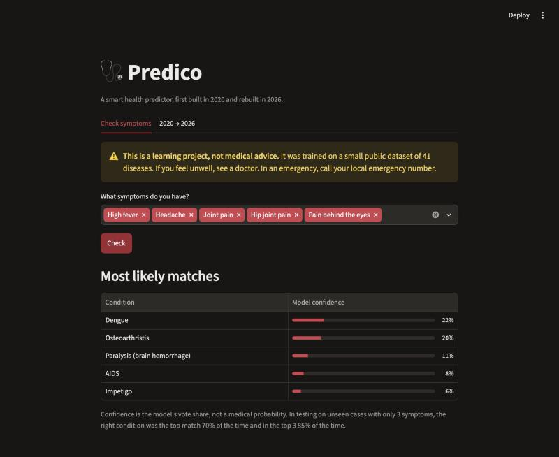
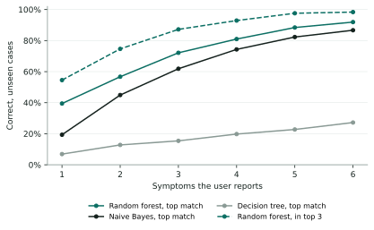
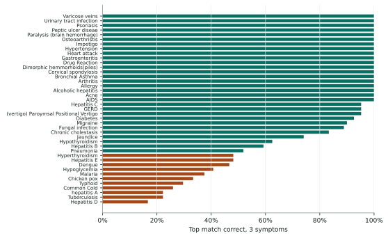
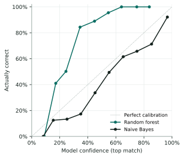
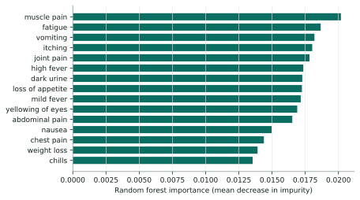

A symptom-based disease predictor, its data, how well it really works, where it fails, and how it should and should not be used.
Predico is a small web app: a user picks symptoms from a list of 131, and a random forest ranks 41 possible diseases. This report studies the project as it stands in 2026. It audits the data, re-evaluates three models under realistic conditions, analyses errors, checks whether the confidence scores mean anything, and explains what drives the predictions.
The training data contains 4,962 rows but only 305 unique cases. Given a full symptom list, the random forest is almost always right (99.9%), but this reflects a very tidy dataset. When a user reports only 3 symptoms, as real users tend to, the correct disease is the top match 72% of the time and in the top three 87% of the time. Errors cluster in diseases with no distinctive symptom: hepatitis D, tuberculosis, hepatitis A and the common cold. The model's confidence scores are strongly under-confident: it shows 37% on average while being right 72% of the time. Predico is suitable as a learning and demonstration tool. It is not suitable for diagnosis, triage or any medical decision.
Online symptom checkers are among the most common health tools people use. They answer one question: given what I feel, what might this be? Predico is a minimal version of that idea, built with classic machine learning on a public dataset, and kept deliberately small: no account, no API key, no data stored.
This study asks four questions:
The project has two scripts and no server-side state.
main.py loads and cleans the CSVs, cross-validates three models, trains the best on all data and writes saved_model/model.joblib and metrics.json.app.py is a Streamlit page. It loads the model once (cached), turns the chosen symptoms into a 131-long yes/no vector, and shows the five most likely diseases with the model's vote share.config.yaml holds the seed, model settings and evaluation settings.| Component | Version |
|---|---|
| Streamlit | 1.67.0 |
| scikit-learn | 1.9.1 |
| pandas / NumPy | 3.1.1 / 2.5.4 |
| Hosting | Streamlit Community Cloud |

The data is the widely shared "Disease Prediction Using Machine Learning" set from Kaggle [1]: rows of yes/no symptoms, each labelled with one disease.
| Measure | Value |
|---|---|
| Rows in the CSVs (training + test) | 4,962 |
| Unique symptom patterns | 305 |
| Diseases | 41 |
| Unique cases per disease | 5 – 10 |
| Symptoms per case (min / median / max) | 3 / 7 / 17 |
| Symptoms that occur in only one disease | 78 of 131 |
| Most shared symptom | vomiting, 17 diseases |
fluid_overload is always zero; the real values sit in a duplicate column, fluid_overload.1. Cleaning merges them, leaving 131 symptoms.The app's own "70% / 85%" figure comes from main.py, which runs one repeat. This report averages three, giving 72% / 87%. The difference is sampling noise.
| Model | All symptoms | 3 symptoms, top match | 3 symptoms, in top 3 |
|---|---|---|---|
| Decision tree | 46.4% | 15.4% | 21.1% |
| Random forest | 99.9% | 72.1% | 87.2% |
| Naive Bayes | 97.9% | 61.9% | 74.1% |

The number of symptoms matters more than the model. With one symptom, the random forest is right 40% of the time. Each extra symptom adds a lot until about five, where it passes 88%. That is why the app warns users who enter fewer than three.
A single decision tree fails because each case has only 5–10 siblings: one tree memorises exact patterns and cannot cope with missing symptoms. A forest of 300 trees, each built on different symptoms, degrades gracefully. Naive Bayes sits in between, which fits its assumption that symptoms are independent.
With 3 symptoms, the random forest gets 22 of 41 diseases right at least 95% of the time. The rest fail in a clear pattern.

| Actual | Predicted as | Rate |
|---|---|---|
| Hepatitis D | Hepatitis C | 40% |
| Tuberculosis | Heart attack | 33% |
| Chicken pox | Fungal infection | 30% |
| Pneumonia | Heart attack | 30% |
| Hepatitis A | Gastroenteritis | 26% |
| Malaria | Gastroenteritis | 25% |
| Common cold | Allergy | 22% |
| Hyperthyroidism | Heart attack | 22% |
Safety note. Mixing up tuberculosis and heart attack is not harmless in either direction. This is why the app shows five ranked options and never a single verdict.
The app shows a confidence next to each match. A well-calibrated model that says "40%" should be right about 40% of the time. Figure 4 plots stated confidence against how often the top match was actually right, with 3 symptoms.

| Random forest | Naive Bayes | |
|---|---|---|
| Average confidence | 37% | 70% |
| Actually right | 72% | 62% |
| Calibration error (ECE) | 0.35 | 0.08 |
| Shown below 30% | 42% | 8% |
The random forest undersells itself. When it shows 30–40%, it is right 84% of the time. Its "confidence" is the share of trees that voted for that disease, and with 41 options those votes spread thinly.
Naive Bayes is less accurate but much better calibrated. For users, under-confidence is the safer failure, but the numbers are still misleading. The app labels them "model confidence, not a medical probability", which is accurate. Section 13 suggests a fix.

The most important symptoms overall are broad ones (muscle pain, fatigue, vomiting, itching, joint pain). They do not identify a disease alone but split the 41 into groups. The deciding step is usually a disease's signature symptom: one that, when present, points almost only to that disease (for example, "silver-like dusting" for psoriasis or "rusty sputum" for pneumonia). Appendix A lists these for every disease. Diseases without one are mostly the ones that fail in the error analysis.
Following the model card format of Mitchell et al. [5].
| Model | Random forest classifier, 300 trees, scikit-learn 1.9.1, seed 42. Trained on 305 unique cases. |
|---|---|
| Input | Yes/no presence of up to 131 symptoms. |
| Output | Vote share across 41 diseases; the app shows the top 5. |
| Intended use | Learning and demonstration: showing how symptom-based classification works and where it breaks. |
| Out of scope | Diagnosis, triage, deciding whether to seek care, any clinical or insurance decision, use on children or in pregnancy, any disease outside the 41. |
| Performance | 3 symptoms: 72% top match, 87% in top 3. 1 symptom: 40% / 55%. Full symptom list: 99.9% (inflated by tidy data). |
| Known weaknesses | Hepatitis D and A, tuberculosis, common cold, typhoid, chicken pox and malaria below 40% with 3 symptoms. Confidence understated by about half. |
| Data caveats | Likely synthetic; no demographics, duration or severity; one stigmatising feature; typos in labels. |
| Fairness | Cannot be assessed: the data has no demographic fields. |
| Privacy | The app stores nothing; symptoms stay in the browser session. |
Every number in this report can be regenerated from the repository. Seeds are fixed at 42 (plus 43 and 44 for the extra repeats).
python -m venv .venv && source .venv/bin/activate pip install -r requirements.txt matplotlib python main.py # trains, writes saved_model/ python docs/report/analysis.py # figures + docs/report/results.json # print docs/report/report.html to PDF, e.g.: chrome --headless --print-to-pdf=docs/Predico-2026-report.pdf docs/report/report.html streamlit run app.py
Raw results: docs/report/results.json. Versions are pinned in requirements.txt.
CalibratedClassifierCV), or show naive Bayes probabilities alongside.For each disease: its common symptoms (present in at least half its cases), ranked by how strongly each one points to that disease alone. "100%" means every case with that symptom has this disease.
| Disease | Most telling symptoms | 3-symptom accuracy |
|---|
Highlighted rows are below 50% top-match accuracy. Most of them have no symptom that points to them alone. The others (such as hepatitis E) do, but lose it when only 3 symptoms are kept.